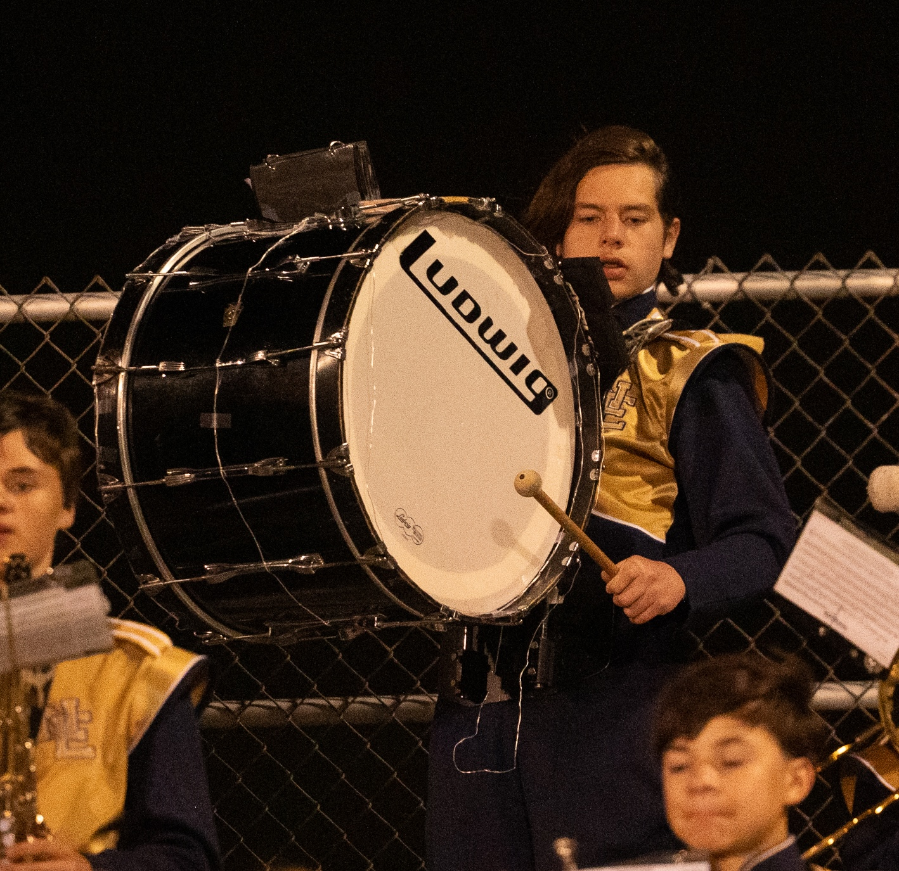

Here are some of the things I do:
I have done a few Hack Club events such as:
I am also trying to start some more soon!
I have been a part of scouting since I was in Kindergarten. Throughout my journey, I have learned a lotof skills including leadership, teamwork, communication, and more.
Some of my favorite activities include: Hiking, Camping, Cooking, and Serving as a Leader.
I have served in the following positions over the past few years:
I have been involved in the following school musicals:
You might be wondering, "But Paxton, what do you do in these musicals?" That's a great question! In 5th grade (The Enchanted Bookshop), I played the role of Sherlock Holmes, 1 of the lead roles. In the rest of the shows I have ran the tech side of the show. I have been the unofficial tech manager for the rest of the shows on the list. I mostly focus on lighting, but I am able to do micropones and sound when needed. I also drove the RC car of Gary (That I made) during SpongeBob: The Musical.
I have been a part of the school band since 3rd grade. I play the percussion and over the past few years I have moved up from playing Snare Drum in elementary school, to playing auxiliary in middle school, and now Bass Drum in high school marching band.
